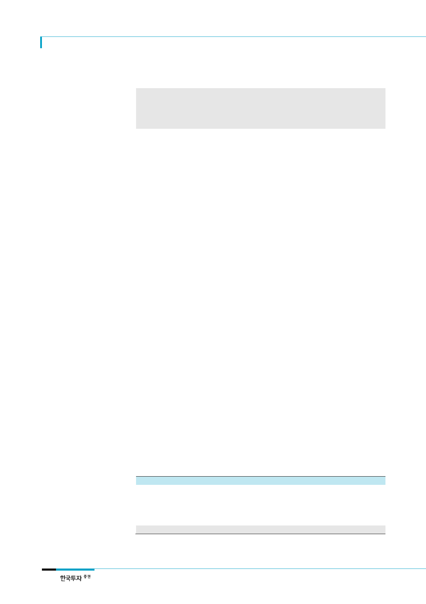

엔씨소프트(036570)
리포트 작성 목적
리니지 M 추정치 상향 반영하여 목표주가 470,000원으로 상향
모바일 MMORPG 시장 개화에 따른 엔씨소프트의 기회 요인 분석
출시 이전 기대치가 높았던 신작들과의 비교를 통한 리니지 M 성공 가능성 분석
I. ‘리니지 M’에 대한 근거 있는 기대감
‘리니지 M’ 매출액 추정치를
반영해 목표주가 470,000원
으로 상향
‘리니지2 레볼루션’ 초기 이용
자 지표 감안시 기대치
상회하는 매출 수준 달성 가능
보수적인 가정에도 초기 일매
출액 20억원 상회할 전망
매수 의견 유지, 목표주가 470,000원으로 상향
엔씨소프트에 대한 매수의견을 유지하며 목표주가를 기존 370,000원에서 470,000원
(12MF EPS에 Target PER 19.7배 적용)으로 27% 상향한다. 1) ‘리니지 M’의 사전예약자
수가 시작 3일만에 기존 기대 신작들을 큰 폭 상회하는 200만명을 기록하며 기대감이 확
대되었다. 2) ‘리니지 RK’와 ‘리니지2 레볼루션’의 흥행으로 국내 모바일 게임 시장 내 ‘리
니지 IP’의 가치도 확인되었다. 3) 또한 ‘리니지2 레볼루션’의 출시로 PC MMORPG 이용
자들이 모바일 게임 시장으로 유입되며 국내 모바일 게임 시장 성장이 가속화되었다. 따
라서 2017년 ‘리니지 M’ 매출 추정치(2017년 6월 초 출시 가정)를 기존 1,227억원(일평
균 매출액 5.8억원)에서 3,069억원(일평균 매출액 14.6억원)으로 250% 상향 조정한다.
‘리니지 M’ 매출액 추정치 상향을 반영해 2017년과 2018년 EPS를 각각 9.6%, 21.3% 상
향했다.
‘리니지 M’ 초기 매출 수준은 우리 추정치를 상회할 가능성이 높을 것으로 판단한다. 경
쟁작으로 꼽히는 ‘리니지2 레볼루션’의 경우 초기 MAU(Monthly Active User)는 500만명
수준이었으며 유료이용자 비율은 30%에 달했다. 출시 한달 간의 MARPPU(Monthly
Average Revenue per Paying User)는 146,000원으로 추정된다. 3일만에 사전예약자수
200만명을 돌파한 ‘리니지 M’ 또한 4개월간 340만명을 모집한 ‘리니지2 레볼루션’ 수준
이상의 이용자를 유입할 수 있을 전망이다. ‘리니지2 레볼루션’ 이용자 내 제한적인 ‘리니
지 1’ 이용자 비중 또한 초기 이용자 유입에 유리하게 작용할 것으로 예상한다.
다소 떨어지는 그래픽 측면에서의 경쟁력과 ‘리니지2 레볼루션’의 선점효과를 감안해 초
기 MAU를 300만명으로 가정하더라도 MARPPU가 ‘리니지2 레볼루션’의 50% 수준을 기
록할 시 일 매출액은 20억원을 상회할 것으로 추정된다. ‘집행검’ 등 ‘리니지1’의 대표 아
이템들에 3,000만원 이상의 금액을 투자한 이용자들의 소비 성향과 수입 수준이 높은 중
장년층 위주의 이용자층을 감안할 때 MARPPU의 가정치 역시 보수적이다. 모바일에서는
처음으로 시도되는 ‘이용자간 아이템 거래’ 기능 추가 기능으로 커뮤니티 활동이 활성화
됨에 따라 경쟁작을 상회하는 Retention Rate도 기대된다.
<표 1> ‘리니지 M’ 초기 매출 수준 예상
구분
사전예약자
출시 첫달 MAU
결제 이용자 비율
결제 이용자수
출시 1 개월 누적 매출
일평균 매출액
리니지 2 레볼루션
340 만명
470 만명
30%
140 만 6,825 명
2,060 억원
68.7 억원
자료: 넷마블, 한국투자증권
리니지 M
3 일간 200 만명
280 만명
30%
84 만명
613 억원
20.4 억원
비고
리니지 2 레볼루션 60% 가정
리니지 2 레볼루션과 동일 수준
2